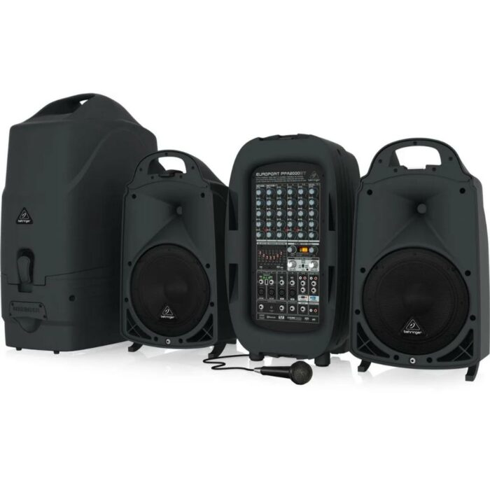

| 1 |
 |
6,900- |
มิกเซอร์ 8 แชนแนล พร้อมช่องต่อแบบ Mic , Line และ Guitar 16-bit,44.1/48 kHz Stereo USB Output สำหรับการบันทึกเสียง และ เล่นเสียงผ่านคอมพิวเตอร์แบบง่ายๆ ช่องเสียบ XLR พร้อม Gain Trim,High-Pass Filters และ 48V Phantom Power
ใช้กับอุปกรณ์ iOS ได้ เช่น iPhone,iPad ผ่านตัวแปลง Lighting to USB Camera Adapter ได้
มีช่องเสียบ HI-Z สำหรับกีตาร์ และ เบส สามารถเลือกความถี่ในการ EQ เสียงกลางได้ มีเอฟเฟคคุณภาพในตัว จาก Alesis
|
| 2 |
 |
16,000- |
VL Audio Viva 715D ลำโพง Active ขนาด 15 นิ้ว 2 ทาง ลำโพงมีแอมป์ในตัว กำลังวัตต์ 1400 วัตต์ ความดังสูงสุด 136dB แบรนด์ของคนไทย
โดยแบรนด์ VL Audio มีเทคโนโลยี FiR LINEAR PHASE ตู้ลำโพงแอคทีฟ VL audio Viva 715D แบรนด์คนไทย ขนาด 15 นิ้ว แบบ 2 ทาง
ให้กำลังขับสูงสุด 1,400 วัตต์ ความดังสูงสุด 136dB มี DSP Processing สามารถเลือกใช้งานได้ถึง 6 Preset มาพร้อมกับเทคโนโลยี FiR LINEAR PHASE อีกด้วย นับว่าเป็นตู้ลำโพงรุ่นใหม่ล่าสุด ประสิทธิภาพสูง จากยี่ห้อง VL-AUDIO |
| 3 |
 |
36,700.- |
ชุดลำโพงพกพา ขนาด 10 นิ้ว ทวิตเตอร์ 1.35 นิ้ว มีเพาเวอร์มิกเซอร์ 8 ช่องในตัว กำลังขับ 2000 วัตต์ สามารถเชื่อมต่อ Bluetooh เพื่อเล่นสื่อจากสมาร์ทโฟนได้
โปรเซสเซอร์จาก Klark Teknik ในการประมวลผลเอฟเฟค (Echo Chorus Flanger Delayed Pitch Shifter) มีระบบกันไมค์หอนมาพร้อมไมค์ Behringer XM1800S 1 ตัว |
| 4 |
 |
6,700.- |
Taxstar GX6 ไมโครโฟน USB Audio Interface ความละเอียดที่ 16 bit/24-bit@44.1kHz-192kHz ปรับแพนเทิร์นรับเสียงได้ Takstar GX6 เป็นดิจิตอล USB ไมโครโฟน รุ่นใหม่ล่าสุด แม้ว่า Takstar จะเพิ่งเข้ามาทำตลาดในไทย แต่ก็เริ่มเป็นที่รู้จักเพราะคุณภาพของสินค้าและรีวิวมากมาย บวกกับอยู่ในเรทราคาที่ไม่สูงมาก ทำให้ตอบโจทย์กลุ่มผู้ใช้งานหลายกลุ่ม เช่น Youtubers, งานบันทึกเสียง,งานบรอดคาสต์ หรือแม้แต่สตรีมมิ่งผ่านโซเชียล |